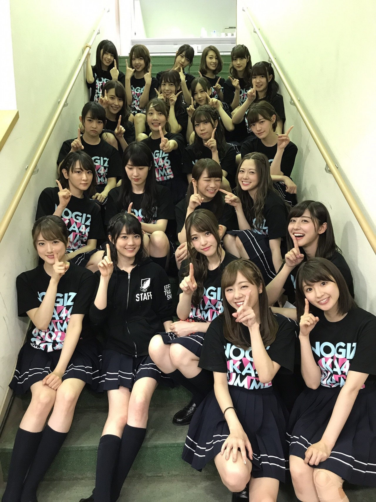
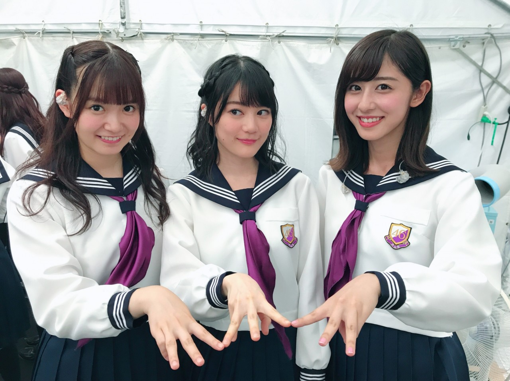
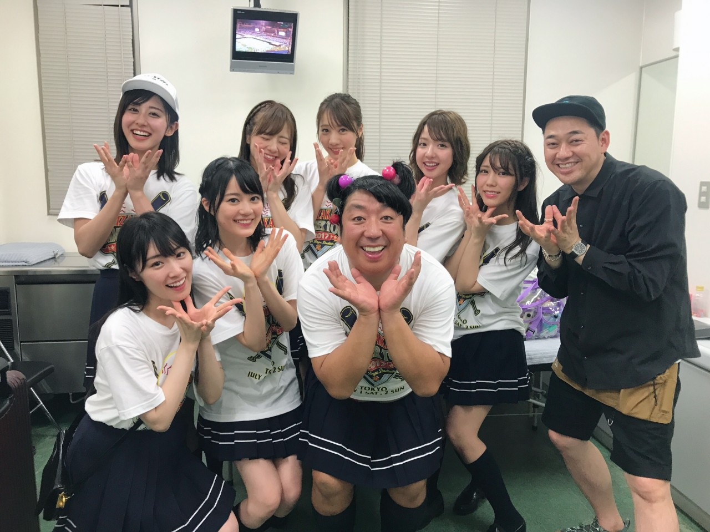
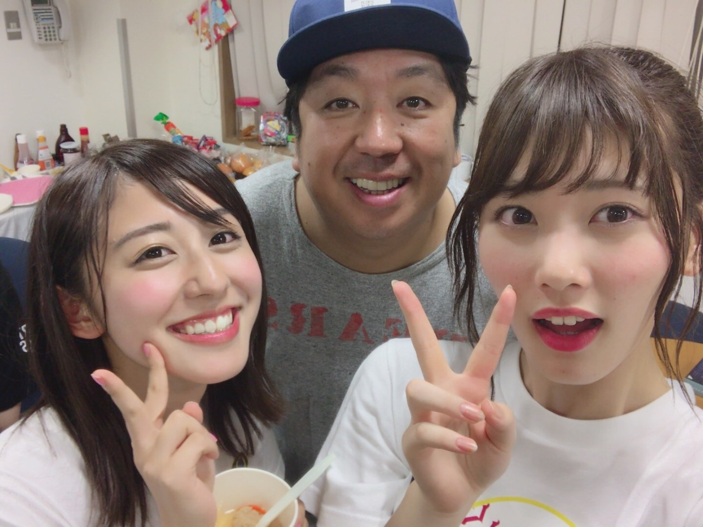
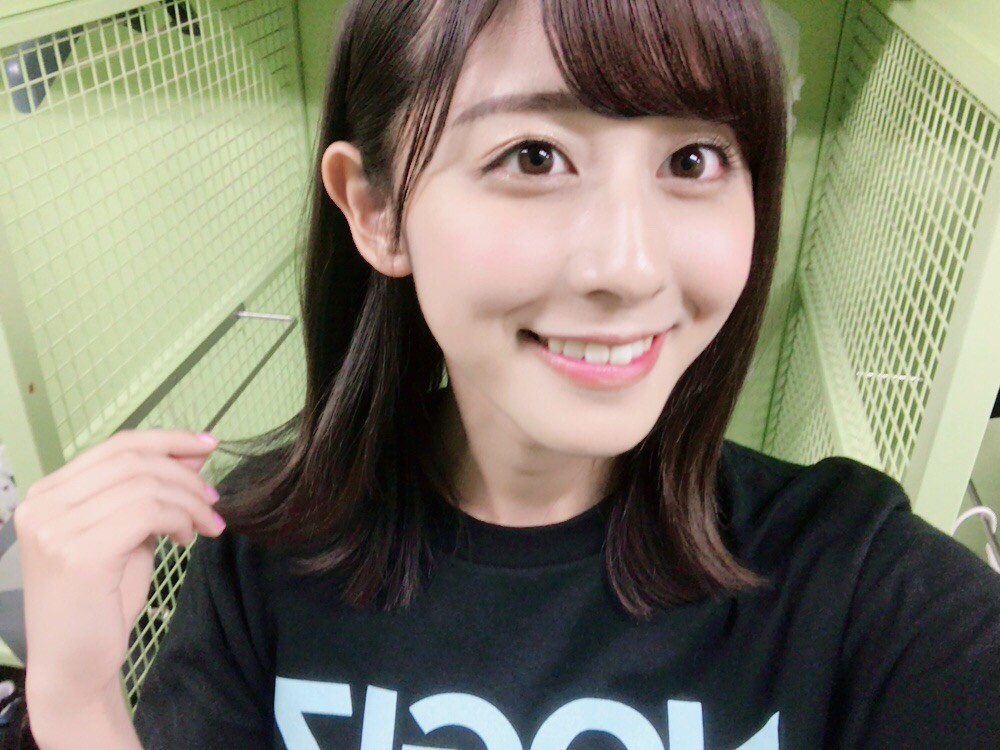

| 2017/07 03 Mon | 斎藤ちはる 神宮振り返り |
ちはるーむへようこそ
真夏の全国ツアー、神宮2days
暑い中来てくださった方
応援してくださった方
ありがとうございました！！
まずは雨が降らなくて安心しました
ブログでカッパとタオル多めに！と言ったのに
持って来てくださった方には無駄足になってしまったけど...結果的に良かったね☺︎
今回は期ごとのライブということで
それぞれの思いを抱えながらステージに立ちました。伝わりましたか？
3期生は初めての神宮で不安や戸惑いもあったと思うけどそれを感じさせないくらい、
フレッシュで可愛くて乃木坂のこれからを作ってくれる頼もしい存在だと再認識できました！
お疲れ様\( ˆ ˆ )/
2期生は初めての2期生だけのコンサート。間に挟まれて色々と思うこと、葛藤や悩みが沢山あったと思うけどその思いを全身で表現していて、とってもカッコよかった！
2期生の底力、パワーを感じました。
そして1期生。
1期生だけでは5年ぶりのライブ。
ここまで苦楽を共にしてきたこのメンバーだけでステージに立つと初期を思い出しました。
そしてこのメンバーで頑張って来てよかったな〜と改めて思いました。
個々がそれぞれの場面で活躍し色々な個性があるからこそ１つになるともっと大きくなれる！
また1期生だけのライブをやってみたいな〜と思いました◎

1期生全員揃うと楽しいね〜

中3組でもまた色々な仕事がしたいな。
そしてサプライズが沢山ありました！
アンダーライブ九州シリーズ。
アンダーアルバム。
東京ドーム2days。
まさかまさかの嬉しいサプライズ続きで
驚きつつ、感動しましたヽ(；；)丿
まだ実感が湧きません。
どれも私達にとって大切です。
一つ一つ素敵なものしていきたいな！
もうひとつサプライズ。
ヒム子さんがインフルエンサーに飛び入り参加してくださいました！
びっくりしたな〜
そして嬉しかったしとても楽しかった！！
この模様は乃木中で放送されるので見れなかった方はお楽しみに。
ライブ後にチューリップとヒム子さん、設楽さんで写真が撮れたよ〜♡宝物になりました

ホールインワン帽子も
メンバー全員いただきました☺︎
うれしい！

そしてヒム子だけでなく日村さんとも写真が撮れました！幸せ〜

今年も、夏が始まりました
最後まで突っ走るぞ〜
いや、真夏の走りより速い(!?)早歩きでもいいかな？◎
別冊カドカワ発売されました！
その写真はまた今度☺︎
斎藤ちはる